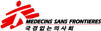

TOP
국경없는의사회는 오늘도
분쟁지역 환자를 치료합니다
전쟁은 물리적인 부상 뿐만 아니라 보이지 않는 상처와 고통 또한 야기합니다. 그리고 제일
먼저 한 국가의 의료시스템을 마비시킵니다.
우리는 분쟁지역에서 어느 한쪽 편에 서지 않습니다. 오로지 의료적 필요를 바탕으로 의료
서비스를 제공하며, 도움이 가장 절실한 사람들을 지원하고자 활동합니다.
7년 넘게 이어져온 내전으로 민간인의 고통이 멈추지 않는,
예멘
Republic of Yemen
지난 1월 21일 새벽, 사우디가 주도하는 아랍 동맹군이
예멘 북부 사다(Sa’ada) 지역의 임시 수용소에 공습을 자행했습니다.
예멘 현장 책임자의 증언
“사우디 동맹군은 학교, 병원, 시장, 결혼식장, 수용소 등 민간 시설을 가리지 않고 결코 정당화할 수
없는 공습을 여러 번 자행해 왔습니다. 동맹군은 전쟁 발발 이후 예멘에 무차별적이고 끔찍한 공격을
수없이 많이 가했는데, 국경없는의사회 병원이 공격을 당한 경우도 있었습니다.
근래에 예멘 전역에서 무력충돌이 거세지고 있습니다. 예멘 내전은 벌써 7년 넘게 이어졌는데
예멘인들의 고통이 멈출 기미가 보이지 않습니다.” 아흐메드 마하트(Ahmed Mahat) / 국경없는의사회 예멘 현장 책임자
필수 의료서비스 제공
전쟁은 제일 먼저 한 국가의 의료시스템을 마비시키는데, 이러한 환경으로 인해 아동이나 임산부,
고령자, 만성질환자와 같이 가장 취약한 인구가 가장 극심한 영향을 받게 됩니다.
예멘 알-카나위스 국경없는의사회 병원에서는 모자 의료서비스를 무상으로 제공하며, 긴 전쟁 속
신생아가 생명을 잃지 않도록 양질의 산전관리를 제공합니다.
약 백만 명 넘는 인구가 강제로 피난을 떠나는,
부르키나파소
Burkina Faso
몇 개월동안 정치사회적 긴장과 시위가 지속되다 결국,
지난 1월 24일, 군부가 정권을 장악했습니다.
살라마타(Salamata)의 이야기
“어느 날 아침, 사람들이 허둥지둥 마을을 떠나고 있었어요. 우리도 아이들을 데리고 무작정
뛰기 시작했죠. 신발도 신지 않은 채였지만 마을에서 35km 떨어진 곳까지 쉬지 않고 갔어요.
피난민 캠프에 도착해서 고향의 친척들이 전부 죽고 우리가 살던 집도 무너졌다는 소식을
들었어요. 고향으로 다시는 돌아가지 못할 수도 있어요.” 살라마타 / 부르키나파소 국내실향민
식량 및 식수 부족 대응
농촌 지역사회에서는 피난 가는 것이 수확할 식량과 가축마저 잃는다는 것을 의미합니다.
부르키나파소에는 농업이나 목축업으로 생계를 유지하는 이들이 많아 식량 확보가
가장 큰 문제입니다.
국경없는의사회는 식량을 보급하고 영양실조 아동을 치료하는 데 집중하고 있습니다.
410만 여명의 피란민이 인근 국가로 몰리고 있는,
우크라이나
Ukraine
지난 2월 24일 러시아는 우크라이나에 대규모 군사작전을 개시했고
전쟁의 불씨는 순식간에 전국으로 번졌습니다.
조앤 리우(Joanne Liu)의 증언
“기억나는 환자는 폭발물로 인해 안면 부상을 입고 오른쪽 눈을 잃은 여성이었습니다.
환부 사진을 보내 달라고 요청했는데 이 여성은 사진 대신 자신의 부상을 입기 전 사진을 보내왔고,
다음 날 병원에 방문해 이 여성은 이렇게 말했습니다. ‘저는 남편과 자식을 위해서라도 다시 예뻐지고 싶어요.’
저는 고작 몇 개의 이야기만 전했지만 이 이야기는 지금 수천 명이 겪고 있는 실화입니다.” 국경없는의사회 전 국제회장·현 우크라이나 의료대응팀의 소아과 전문의 조앤 리우(Joanne Liu)
의료 대피용 전용 기차 운영
두 칸에 의료 장비를 갖춘 이 기차는 국경없는의사회와 우크라이나 철도청이 공동 개발했습니다.
이송 환자 9명은 중증이지만 기차 이동이 가능할 만큼 안정되어 우크라이나 남동부에 위치한
자포리자(Zaporizhzhia)에서 서부 르비우(Lviv)의 여러 병원으로 전원했으며, 9명의 국경없는의사회
의료진이 함께했습니다.
추후 더 대대적이고 체계적인 환자 이송을 위해 더욱 고도화된 의료장비를 갖춘 기차를 개조 중입니다.
2018년 하반기부터 정치경제적 위기로 폭력이 만연한,
아이티
Republic of Haiti
수개월 째 수도 곳곳에서 다양한 집단 간 무력충돌과
폭력 사태가 지속되고 있습니다.
마리 조세(Marie-Jose)의 이야기
“시내에 갔다가 집에 오는 길에 갑자기 총성이 들렸습니다. 집까지 갈 수조차 없었고,
집 뿐 아니라 가지고 있던 모든 게 전부 불에 타버렸어요. 저를 포함해서 마을 사람들이
전부 피난했습니다. 자녀들과 함께 파크셀티크(Parc Celtique)에서 생활하고 있는데
이곳 상황은 참담합니다. 수중에 아무것도 없어요. 음식, 화장실, 잘 곳이 가장 급합니다” 마리 조세(Marie-Jose) / 피난민 여성
성·젠더기반 폭력 진료소 운영
아이티 전역에는 성·젠더기반 폭력 또한 횡행하고 있습니다. 성·젠더기반의 폭력 생존자는
대부분 여성과 소녀인데, 통계에 따르면 15~49세 아이티 여성 8명 중 1명이 성·젠더기반 폭력을
겪었습니다. 국경없는의사회는 24시간 무상으로 제공되는 유선 상담 서비스뿐만 아니라
포르토프랭스(Port-au-Prince)와 고나이브(Gonaives) 지역에서 두 개의 성·젠더기반 폭력
진료소를 운영하고 있습니다.

국경없는의사회는 모든 활동에 있어
우리의 원칙을 지켜왔습니다
1971년 설립 이래, 무려 1억 명이 넘는 환자를 치료해왔습니다.
우리는 우리의 활동 원칙에 근거해 전쟁의 피해를 입은 사람이
누구든, 어디에 있든 관계없이 의료 인도적 지원을 제공합니다
-
독립성
운영비 97%는 민간기부금으로 마련되어
정부, 종교 등 특정 집단 이익에 관계없이
독립되어 활동할 수 있습니다. -
중립성
국경없는의사회는 어느 한 편에 서지 않고,
인종, 종교, 성별, 정치적 성향에 관계없이
오직 의료적 필요에 따라 활동합니다. -
책무성
환자 및 후원자들에게 책임을 다하고자
모금 활동, 행정 운영 비용을 최소화하여
사용된 후원금 80% 이상 구호활동에 활용됩니다. -
의료윤리
의료 윤리 규범을 준수하여 활동하며,
특히 의료활동 중 개인이나 집단에
해를 가하지 않을 의무를 다하고 있습니다.
국경없는의사회 후원효과
생명을 살리는 일에는 국경이 없습니다
2020년 전체 기준
-
활동국가
88개국
세계 곳곳, 가장 긴박한 위험에
처한 지역에서 활동합니다. -
구호활동가 수
41,172명
구호 현장으로 구호활동가를 파견하고
직접 환자들을 치료합니다. -
외래환자 진료
9,904,200회
1년간 후원자들과 함께 수많은 환자들의 삶에
변화를 만들었습니다.
우리의 수 많은 의료 활동은
전 세계 630만 명의 후원자가 있었기에 가능했습니다
-
정형외과의 이재헌
수술한 환자가 쩔룩쩔룩 걸어오면서
저한테 고맙다고 인사할 때는
정말 감동이었죠 -
간호사 박지혜
악조건 속에서도 무사히 회복한
고마운 아이들이 기억나면서,
제가 간호사인 것이 행복했습니다 -
산부인과의 정의
환자가 살아서 돌아갈 때마다
‘내가 여기 오길 정말 잘했구나’
하고 보람을 느낍니다 -
마취과의 이효민
‘그 때 선생님이 살린 아기입니다,
이제 건강해져서 오늘 퇴원합니다’
라고 말하는데 정말 기쁘더군요
오늘, 당신의 마음을
나누어 주세요
국경없는의사회는 오늘도 후원자 여러분의 지원으로 분쟁지역에서 긴급히 치료가 필요한 환자들에게
신속한 의료지원을 제공할 수 있습니다. 환자들의 삶에 소중한 변화를 일으키는 데 힘이 되도록 함께해주세요.
후원해 주신 금액은 전 세계 80여 개국의 도움이 필요한 환자들과 긴급구호 활동을 위해 사용됩니다.
후원 캠페인
국경없는의사회의 활동을 움직이는 것은 바로 여러분입니다


- 후원문의
- 02-3703-3555
- 후원계좌
- 신한 140-009-508856
06158 서울시 강남구 테헤란로 443 애플트리타워 9층 대표자: 드쿠론랄프아하누 고유번호: 101-82-21115 Copyright 2022 ⓒ국경없는의사회.All right Reserved.